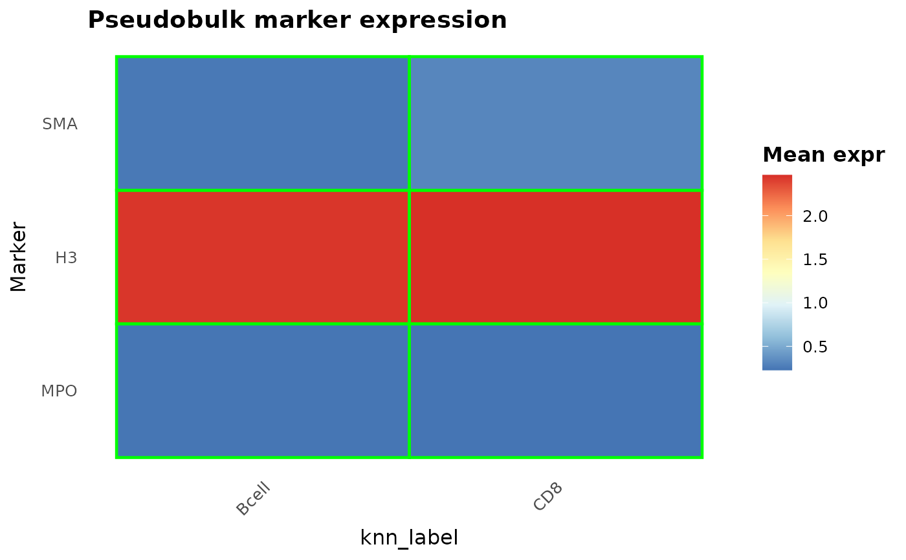

Computes mean marker expression per label group and plots a heatmap restricted to relevant markers defined in a lineage table.
Usage
plot_pseudobulk_heatmap(
spe,
label_col,
lineage_table = NULL,
assay_name = "exprs",
cell_types = NULL,
marker_groups = c("pos_markers", "neg_markers"),
include_all_markers = TRUE,
drop_unknown = TRUE,
drop_na = TRUE,
cluster_rows = FALSE,
cluster_cols = FALSE,
show_values = TRUE,
value_digits = 2,
title = "Pseudobulk marker expression",
scale = "none",
row_order = NULL,
col_order = NULL,
highlight_lineage = TRUE,
heatmap_palette = "RdYlBu",
heatmap_direction = 1,
text_size = 2.5
)Arguments
- spe
A `SpatialExperiment`/`SingleCellExperiment`.
- label_col
Column in `colData(spe)` containing labels.
- lineage_table
Tibble with cell_type/pos_markers/neg_markers.
- assay_name
Assay name to pull values from. Default "exprs".
- cell_types
Optional character vector to restrict label groups.
- marker_groups
Which marker sets to include from lineage_table. Default `c("pos_markers", "neg_markers")`.
- include_all_markers
Logical; if TRUE, use all assay markers rather than only lineage_table markers. Default TRUE.
- drop_unknown
Logical; drop "Unknown" labels. Default TRUE.
- drop_na
Logical; drop NA labels. Default TRUE.
- cluster_rows
Logical; if TRUE, cluster markers (rows). Default FALSE.
- cluster_cols
Logical; if TRUE, cluster labels (cols). Default FALSE.
- show_values
Logical; draw mean values on tiles. Default TRUE.
- value_digits
Digits for tile labels. Default 2.
- title
Plot title. Default "Pseudobulk marker expression".
- scale
Scaling for the heatmap. One of "none", "row", or "column". Default "none".
- row_order
Optional character vector of marker names to enforce when `cluster_rows = FALSE`. Any missing markers are ignored; any remaining markers not listed are appended in their existing order.
- col_order
Optional character vector of label names to enforce when `cluster_cols = FALSE`. Any missing labels are ignored; any remaining labels not listed are appended in their existing order.
- highlight_lineage
Logical; draw outlines for lineage markers per cell type. Positive markers are green, negative markers are red. Default FALSE.
- heatmap_palette
Palette name for the heatmap. Default "RdYlBu" for a blue-yellow-red diverging scale (pheatmap style). Set to a viridis option (e.g., "viridis", "magma") to use `ggplot2::scale_fill_viridis_c()`.
- heatmap_direction
Direction for viridis palettes. Default 1.
- text_size
Numeric. Text size for numeric values drawn on heatmap tiles
Examples
data("cytoGateR_example", package = "cytoGateR")
spe <- cytoGateR_example
labels <- unique(as.character(SummarizedExperiment::colData(spe)$knn_label))
labels <- labels[!is.na(labels)][seq_len(min(2L, sum(!is.na(labels))))]
markers <- rownames(spe)[seq_len(min(3L, nrow(spe)))]
lineage <- data.frame(
cell_type = labels,
pos_markers = I(rep(list(markers), length(labels))),
neg_markers = I(rep(list(character()), length(labels)))
)
plot_pseudobulk_heatmap(
spe,
label_col = "knn_label",
lineage_table = lineage,
cell_types = labels,
include_all_markers = FALSE,
show_values = FALSE
)

#> $plot
 #>
#> $plot_df
#> # A tibble: 6 × 3
#> marker label expression
#> <fct> <fct> <dbl>
#> 1 MPO Bcell 0.231
#> 2 MPO CD8 0.228
#> 3 H3 Bcell 2.44
#> 4 H3 CD8 2.47
#> 5 SMA Bcell 0.253
#> 6 SMA CD8 0.319
#>
#>
#> $plot_df
#> # A tibble: 6 × 3
#> marker label expression
#> <fct> <fct> <dbl>
#> 1 MPO Bcell 0.231
#> 2 MPO CD8 0.228
#> 3 H3 Bcell 2.44
#> 4 H3 CD8 2.47
#> 5 SMA Bcell 0.253
#> 6 SMA CD8 0.319
#>